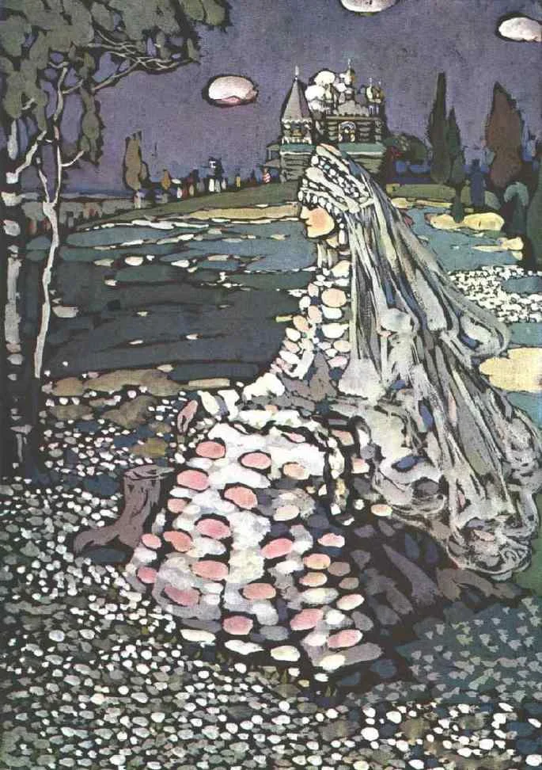
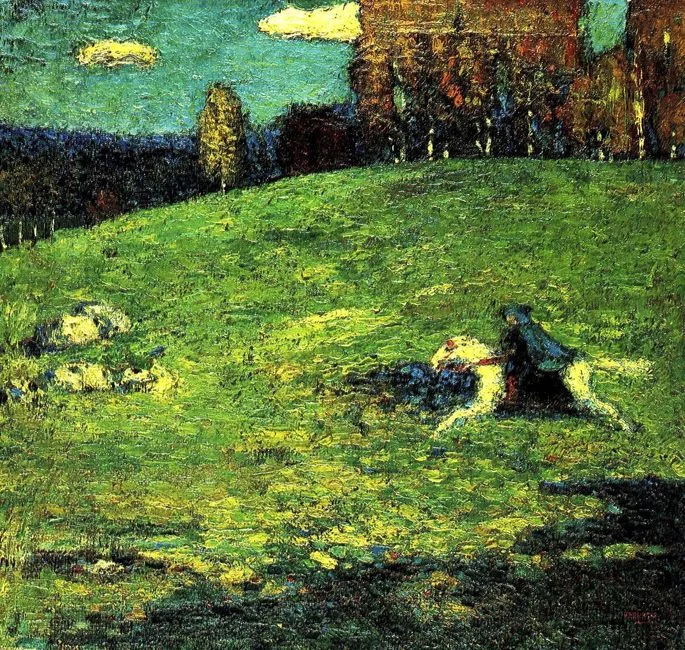
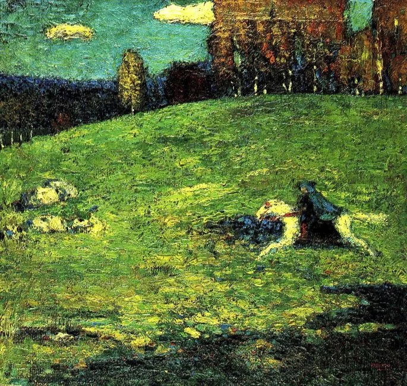

Trabalho de Artes
Em maio de 1901, Kandinsky fundou juntamente com outros artistas
a Sociedade Artística Phalanx onde lecionou na escola fundada pela
sociedade. Gabriele Münter foi uma de suas alunas que mais tarde
viria a ser sua esposa.
Kandinsky
Por Liane Carvalho Oleques
Mestre em Artes Visuais (UDESC, 2010)
Graduada em Licenciatura em Desenho e Plástica (UFSM, 2008)
Este artigo foi útil?
Considere fazer uma contribuição:
Contribuir utilizando o Google
Ouça este artigo:
Pioneiro do Movimento Abstracionista, Wassily Kandinsky foi um pintor russo que apesar da formação no curso de Direito pela Universidade de Moscou, demostrou grande interesse e inclinação para Artes Visuais após conferir uma exposição de pintores impressionistas e ficar deslumbrado por aquelas pinturas.
Quem foi o artista russo Wassily Kandinsky?
Wassily Kandinsky e o abstracionismo
Um dos pioneiros na arte abstrata, Wassily Kandinsky abriu o caminho para os artistas que lhe sucederam neste campo artístico. As suas pinturas foram descritas como "música visual", pois através das cores e da linha, expressava como a música o fazia sentir. Fascinado pela associação entre cor e música, chegou mesmo a compor músicas para as suas obras. O artista procurava provocar uma resposta emocional ao espectador sem a influência constrangedora de objetos definidos e limites físicos. Descubra neste artigo como Wassily Kandinsky, a partir das suas obras e teorias desempenhou um papel fundamental e surpreendente para a narrativa do abstracionismo
As 3 principais obras de Wassily Kandinsky para conhecer a vida do pintor
Clique na Imagem para ver a Biografia dela

 

Membros da Equipe
F.Wellington / Maria Vitoria / Lucas / Elano
By: W.Ribeiro